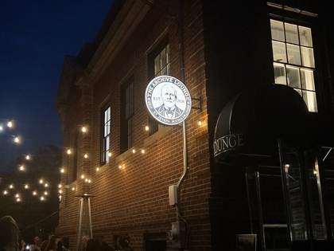
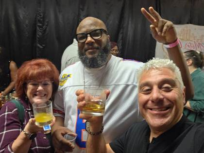
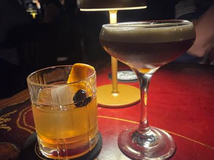
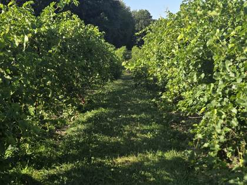
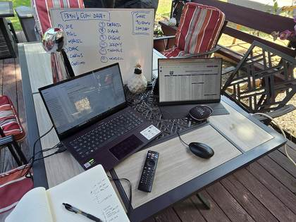

I’m Marci DuBay, and I just joined Sum-Bourbon Joe as Director of Experiences & Public Relations for next season.
I was born and raised in Macomb County, loving the small town feel and the beautiful scenery and great places to check out around town. I love being out in our towns, meeting the people behind the shops, bars, restaurants, and small businesses that make this place feel like home — and I love telling their stories.

How I found Joe
I didn’t meet Joe through the show. I met Joe and his wife on the sidelines — our boys playing soccer, then baseball.
We became fast friends pretty quickly. Same sense of humor, same love of just hanging out, same love of travel. Before long our families were vacationing together, boys and all.

And then we started our own traditions. Every year, we take a trip to Kentucky and make our own bourbon trail. And every year, we take a trip to Upstate New York and make our own wine trail.
So when Joe and Tarmale asked me to help take Sum-Bourbon Joe on the road, it didn’t feel like a job offer. It felt like the next natural thing — taking what we already love doing together, and bringing the rest of Macomb County along for it.


Why I said yes
Next season, we’re recording 10 episodes at 10 different locations around Macomb County. My job is to find those spots, build the relationships, and make sure every guest feels welcome at the table.
It’s not about fancy. It’s about real stories, real people, and the places we already love.


What I’ll be writing about here
This blog is where I’ll share what I’m seeing out there:
- The owners and makers I’m meeting — and why their story stuck with me
- Behind the scenes of finding our 10 locations
- The Macomb spots you tell me I have to check out
- What it’s like pulling up a chair with Joe and Tarmale, and the guests who join us
Want in?
If you own a business in Macomb County — a restaurant, bar, shop, studio, service, you name it — and you think your place could host a conversation, I want to hear from you.
And if you’re a listener, tell me: where should we go next? Who should we talk to?
Pull up a chair. We’re just getting started.
— Marci